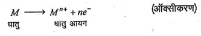
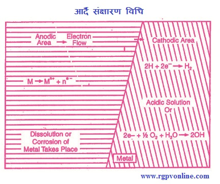

Q.25 : धातुओं के संक्षारण पर निबंध लिखिए।
उत्तर - धातु संक्षारण (Metal Corrosion)- धातुओं में अपने ऊपरी वातावरण के रासायनिक एवं विद्युत्-रासायनिक प्रभाव से धीरे-धीरे क्षय होने या नष्ट होने की प्रवृत्ति पाई। जाती है। इस प्रक्रिया के फलस्वरूप धातु अपने ऑक्साइड, हाइड्रॉक्साइड, हाइड्रेटेड ऑक्साइड, कार्बोनेट या सल्फाइड के रूप में परिवर्तित हो जाती है तथा धातु सामर्थ्य एवं धातु चमक नष्ट हो जाती है। धातुओं के इस प्रकार क्षय होने की क्रिया को धातु संक्षारण कहते हैं।
अतः धातुओं अथवा मिश्रधातुओं का प्राकृतिक वातावरण के प्रभाव से अवांछित (undesired) रूप से रासायनिक अथवा विद्युत्-रासायनिक आक्रमण के द्वारा धीरे-धीरे क्षय होना धातु संक्षारण कहलाता है।"
संक्षारण प्रमुखतः निम्नलिखित दो प्रकार का होता है -
(i) रासायनिक अर्थात् शुष्क संक्षारण (Chemical or Dry Corrosion)- इस प्रकार का संक्षारण, वातावरण या वायुमण्डल में उपस्थित गैसों, जैसे - ऑक्सीजन, हाइड्रोजन सल्फाइड, सल्फर डाइऑक्साइड, नाइट्रोजन तथा नमी, अकार्बनिक द्रव इत्यादि की सीधे रासायनिक क्रिया के द्वारा होता है। इस प्रक्रम में वायुमण्डल की गैसें तथा नमी आदि की धातु की सतह पर क्रिया करने के फलस्वरूप धात्विक ऑक्साइड, सल्फाइड अथवा कार्बोनेट की परत बन जाती है। इस प्रकार धातु की सतह नष्ट हो जाती है। इस प्रकार का संक्षारण वातावरण तथा धातु की रासायनिक बन्धुता (chemical affinity) पर निर्भर करता है। इसके साथ ही संक्षारण पदार्थ की बनने वाली परत भी रासायनिक संक्षारण की मात्रा का निर्धारण करती है।
(ii) विद्युत्-रासायनिक अथवा आर्द संक्षारण (Electrochemicalor Wet Corrosion)- धातुएँ जलीय (द्रव) माध्यम के सम्पर्क में आने पर संक्षारित हो जाती हैं, जो कि एक विद्युत्-रासायनिक घटना है। इस प्रकार का संक्षारण द्रव के धातुओं से प्रत्यक्ष सम्पर्क के कारण होता है। जब दो असमान धातुएँ अथवा मिश्रधातुएँ पूर्णतः अथवा आंशिक रूप से किसी द्रव में डूबी रहती हैं तब भी विद्युत्-रासायनिक संक्षारण होता है।
विद्युत्-रासायनिक या आर्द संक्षारण की क्रियाविधि - इस प्रकार के संक्षारण में पृथक-पृथक ऐनोडिक तथा कैथोडिक क्षेत्र बन जाते हैं तथा इनके मध्य विलयन के माध्यम से विद्युत्-धारा प्रवाहित होती है। इस प्रकार एक विद्युत्-रासायनिक तंत्र का निर्माण हो जाता है, जिसमें निम्नलिखित प्रकार से धातु संक्षारित होती है -
ऐनोडिक क्षेत्र में ऑक्सीकरण होता है जिसमें धातु से स्वतंत्र इलेक्ट्रॉन मुक्त होते हैं और धातु, आयनों (ions) के रूप में विलयन में घुलती रहती है तथा धातु के आयन संयुक्त अवस्था में ऑक्साइड इत्यादि में परिवर्तित हो जाते हैं।


चित्र 25.1 आर्दै संक्षारण विधि
इसके विपरीत कैथोडिक क्षेत्र में अपचयन (reduction) होता है जिसमें इलेक्ट्रॉन लाभ (gain of electron) होता है। सामान्यतः कैथोडिक अभिक्रिया से कैथोड भाग की धातु प्रभावित नहीं होती बल्कि इस भाग में द्रव माध्यम के द्वारा इलेक्ट्रॉन अवशोषित होकर कतिपय आयनों तथा OH-,O2- इत्यादि में परिवर्तित हो जाते हैं। इस प्रकार ऐनोडिक क्षेत्र में मुक्त हुए इलेक्ट्रॉन तथा कैथोडिक क्षेत्र में उत्पन्न हुए कुछ आयन (OH-, O2- आदि) एक दूसरे क्षेत्र में परिचलन द्रव माध्यम (conducting liquid medium) से गमन करते हैं तथा ऐनोड एवं कैथोड के मध्य संक्षारण उत्पाद बनाते हैं।
संक्षारण को प्रभावित करने वाले कारक (Factors Affecting Corrosion) - संक्षारण की गति तथा उसका प्रभाव क्षेत्र प्रमुखतः संक्षारण वातावरण तथा प्रयुक्त धातु की। प्रकृति पर निर्भर करता है। जो कि निम्नलिखित हैं -
(i) संक्षारण वातावरण की प्रकृति (Nature of Corrosion Atmosphere)- संक्षारण की तीव्रता को वातावरण निम्नलिखित प्रकार से प्रभावित करता है -
(अ) ताप (Temperature)- वातावरण का ताप बढ़ने से संक्षारण में वृद्धि होती है।
(ब) आर्द्रता (Humidity)- वायुमण्डल की आर्द्रता से धातुओं के संक्षारण की गति बढ़ जाती है।
(स) ऑक्सीजन का प्रवाह (Flow of Oxygen) - नम धातु की सतह पर ऑक्सीजन या वायु की अधिक मात्रा प्रवाहित होने पर संक्षारण की गति बढ़ जाती है।
(द) वायुमण्डलीय अशुद्धियाँ (Atmospheric Impurities)- वायुमण्डलीय अशुद्धियाँ संक्षारण की गति बढ़ा देती हैं।
(ii) धातु की प्रकृति (Nature of Metal)- संक्षारण की गति को धातु की प्रकृति निम्नलिखित प्रकार से प्रभावित करती है-
(अ) विद्युत्-रासायनिक श्रेणी (Electrochemical Series)- जो धातुएँ विद्युत्-रासायनिक श्रेणी में हाइड्रोजन से ऊपर होती हैं वे अधिक शीघ्रता से संक्षारित होती हैं। संक्षारण की गति एवं तीव्रतः उसके स्थान एवं अधिकता पर निर्भर करती हैं। उनमें स्थान का जितना अधिक अंतर होता है, ऐनोडिक धातु या मिश्रधातु की संक्षारण की गति उतनी ही अधिक होती है।
(ब) अति वोल्टता (Excess Voltage)- जब एक धातु विद्युत्-रासायनिक श्रेणी में ऊपर स्थान ग्रहण करती है, जैसे- जिंक, तो इसे 1N H2SO4 में रखने पर धीरे-धीरे इसका संक्षारण होता है और हाइड्रोजन गैस निकलती है परन्तु जब यह कॉपर जैसी धातु के सम्पर्क में आती है तो अति वोल्टता की कमी के कारण संक्षारण गति तीव्र हो जाती है। अतः धातु की अति वोल्टता को कम करने पर धातु या मिश्रधातु की संक्षारण गति में वृद्धि हो जाती है।
(स) ऐनोडिक एवं कैथोडिक भाग के आनुपातिक क्षेत्र (Proportional Area of Anodie and Cathodic Part) - जब दो असमान धातुएँ एक-दूसरे के सम्पर्क में हो तो ऐनोडिक भाग का संक्षारण, कैथोडिक भाग व ऐनोडिक भाग के क्षेत्र के अनुपात के समानुपाती होता है। यदि ऐनोडिक क्षेत्र छोटा होता है तो संक्षारण की गति अधिक तीव्र होती है।
(द) धातु की शुद्धता (Purity of Metal) - धातु में उपस्थित अशुद्धियाँ सामान्यतः विषमांगता पैदा करती हैं जो धातु के संक्षारण प्रतिरोध को कम कर देती हैं।
(इ) धातु की भौतिक अवस्था (Physical State of Matter)- धातु की भौतिक अवस्था, जैसे- ग्रैन साइज, क्रिस्टलों का अभिविन्यास, प्रतिबल आदि से संक्षारण की गति प्रभावित होती है। उदाहरण के लिए, जब धातु कणों का आकार सूक्ष्म होता है, तो उसकी विलेयता अधिक होती है जिससे उसका संक्षारण तीव्रता से होता है।
(फ) पृष्ठ परत की प्रकृति (Nature of Surface Layer)- जब संक्षारण उत्पाद की परत का आयतन धातु से कम होता है तब धातु के सरन्ध्र होने से संक्षारण की गति बढ़ जाती है।
(य) संक्षारण उत्पाद की विलेयता (Solubility of Corrosion Product) - यदि विद्युत्-रासायनिक संक्षारण उत्पाद संक्षारण माध्यम में विलेय होता है तो संक्षारण तीव्र गति से होता है।
(र) संक्षारण उत्पाद की वाष्पशीलता (Vapourisability of Corrosion) - यदि संक्षारण उत्पाद वाष्पशील होता है तो यह बनने के साथ ही वाष्पित हो जाता है जिससे धातु सतह अगले आक्रमण के लिए प्राप्त हो जाती है, उदाहरण - मॉलिब्डेनम।